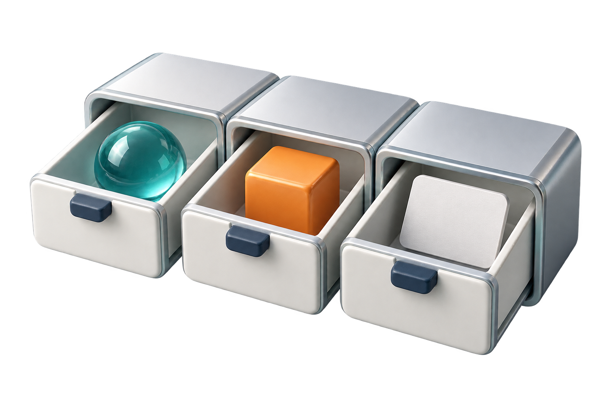
VARIABLE
値を覚える
名前や点数に名前を付けて、後から使う。これが「変数」の出番です。
13 / PROGRAMMING LANGUAGES
JavaScript、Python、React、Node.js…。
名前が増えても、大丈夫。
「何を書く？」「何で作る？」「どこで動く？」から、技術の地図を見てみましょう。
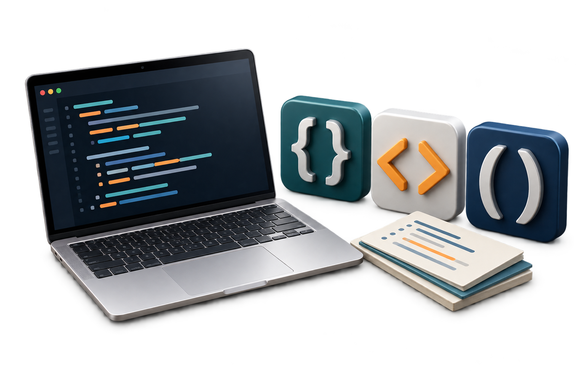
01 / THE BASIC IDEA
プログラムは、コンピューターに伝える手順書。「値を覚える」「条件で分ける」「繰り返す」「まとめて呼び出す」は、さまざまな言語で出会う考え方です。

VARIABLE
名前や点数に名前を付けて、後から使う。これが「変数」の出番です。
CONDITION
80点以上なら「合格」。条件を満たすかどうかで、処理の道を選びます。
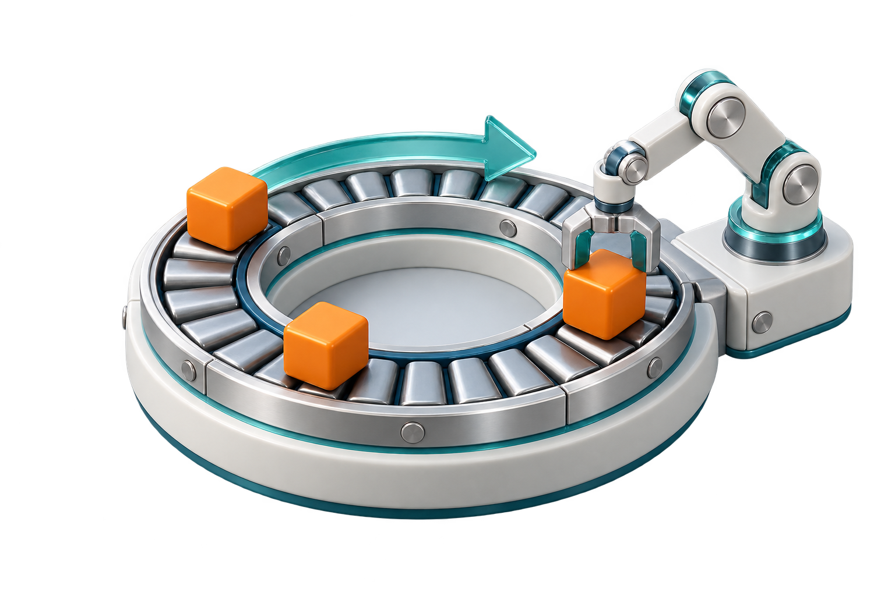
LOOP
名簿の一人ひとりに同じ処理をする。繰り返しで、手作業を減らします。
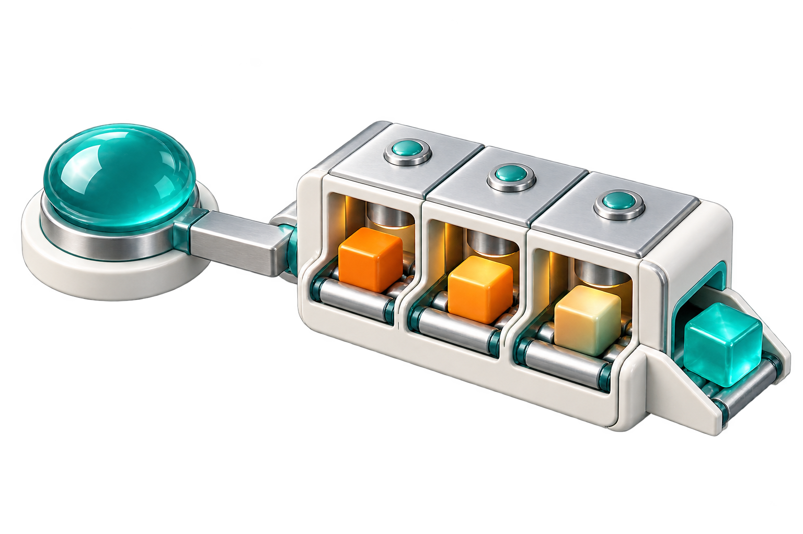
FUNCTION
一連の処理に名前を付けておき、好きなときに名前で呼び出す。同じ処理を何度も書かずに済みます。これが「関数」です。
文法が変わっても、計算したいことは同じです。
const total = 100 + 200;
console.log(total);出力 300読み比べ用の例です。実行はしません。
02 / WORDS BEFORE TOOLS
料理を思い浮かべてみましょう。手順を示す「言葉」、便利な「道具」、流れが決まった「ミールキット」。プログラムの世界にも、似た役割があります。ここでは、じゃがいもの皮むきで比べてみます。
「手で洗う → 手で持って包丁でむく」と、手順を一つずつ書くための、文法が決まった言葉です。
例：JavaScript、Python、PHP、C#、Java
ピーラーのような便利な道具。よく使う処理をほかの人がまとめたもので、自分が必要なときに呼んで使います。
例：React、jQuery
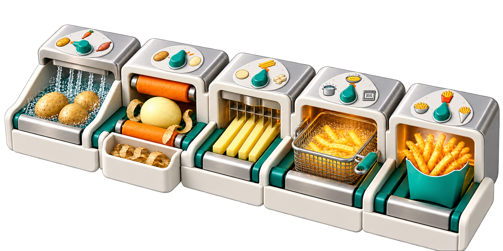
「洗う → むく → 細長く切る → 揚げる」という調理の流れが先に決まっています。自分は「何を、どうするか」だけを、決められた場所に書きます。
例：Next.js、Express、Electron
言葉で指示を書くだけでは、まだ動きません。書いた指示を処理する仕組みが必要です。JavaScriptならブラウザーやNode.js、JavaならJVMなどが実行環境に当たります。
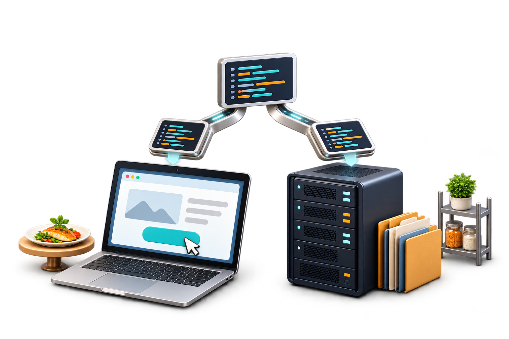
同じJavaScriptでも、動かす場所で、できることが変わります。
Webページの表示を変えたり、ボタンのクリックに反応したりできる。パソコンのファイルを自由に読み書きすることはできない。
ブラウザーの外で動き、ファイルを読み書きしたり、サーバーとして働いたりできる。Webページの画面やボタンはない。
// ブラウザーで動く（Node.jsにはWebページがないので動かない）
document.querySelector('button').textContent = '押したね';
// Node.jsで動く（ブラウザーではパソコンのファイルを開けない）
const fs = require('fs');
fs.readFileSync('memo.txt', 'utf8');どちらも同じJavaScriptの書き方ですが、document（Webページ）はブラウザーにしかなく、fs（ファイル）はNode.jsにしかありません。
料理でいえば：同じレシピでも、料理を出す客席のカウンターと、道具や保管庫がそろった奥の厨房では、使える設備が違います。
まとめると：言語で書き、道具やキットを使い、実行環境で動かす。この三つは組み合わせるものです。
03 / LANGUAGE PALETTE
一つの言語で作れるものは、一つだけではありません。よく出会う用途を入口に見てみましょう。
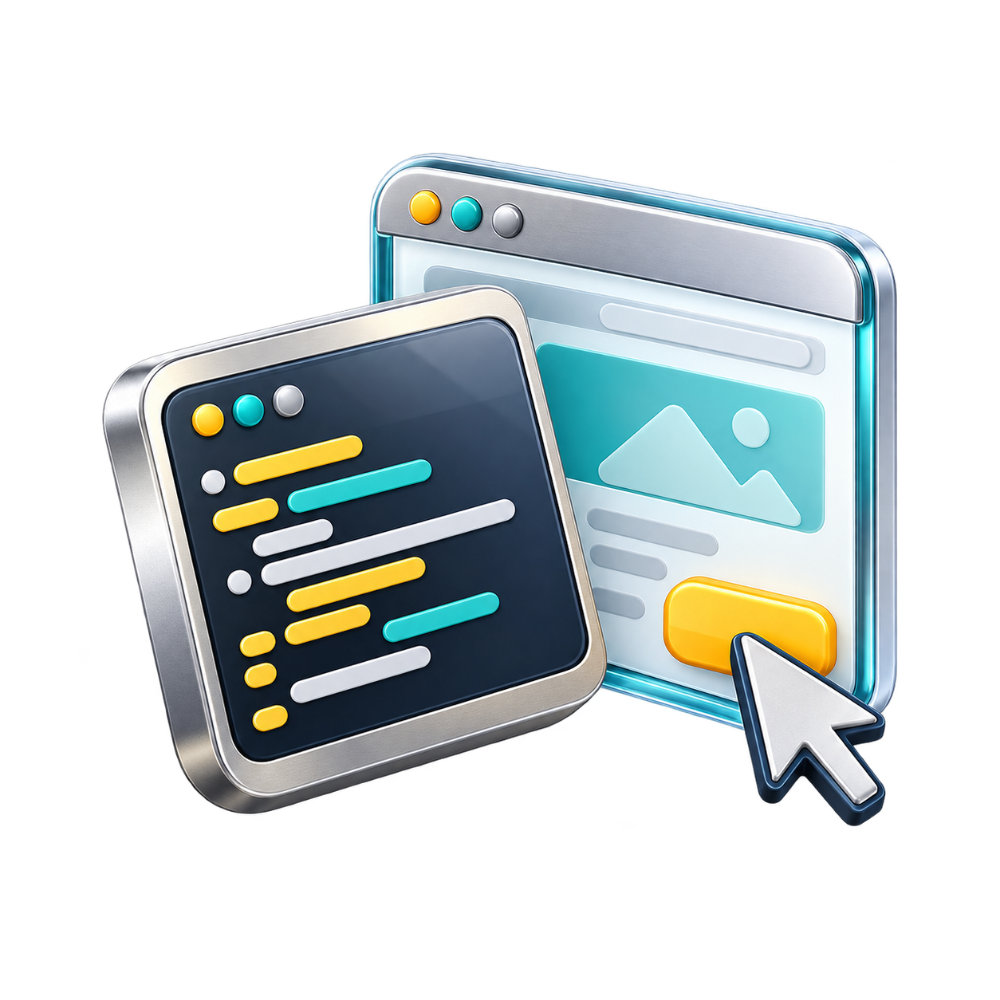
ボタンに反応する画面や、サーバーの処理に。ブラウザーとNode.jsでは、使える機能が違います。
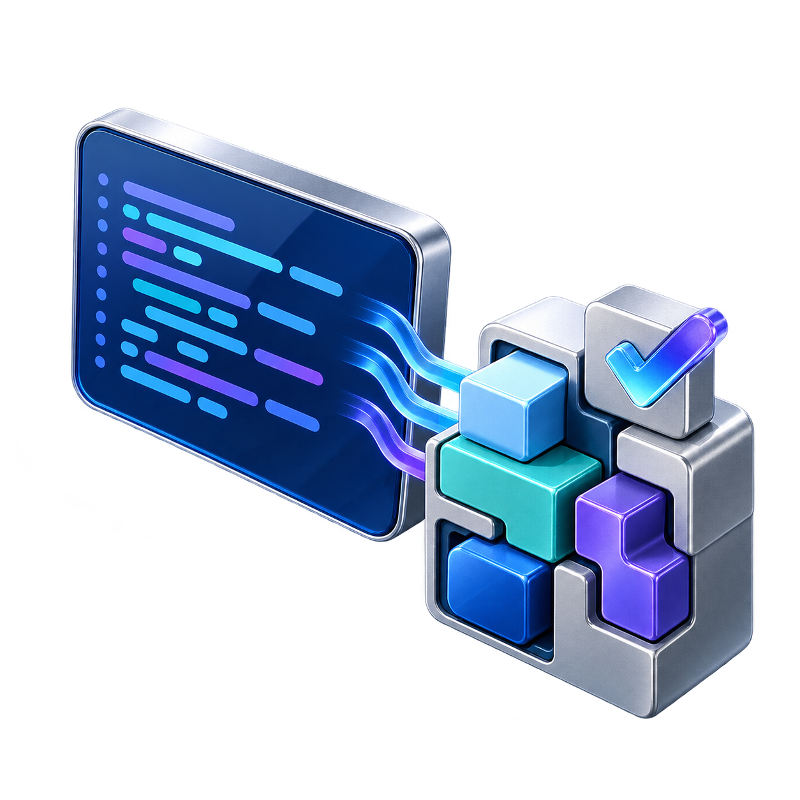
JavaScriptに型の仕組みを加えた言語。大きくなるコードの取り違えを、実行前に見つける助けに。
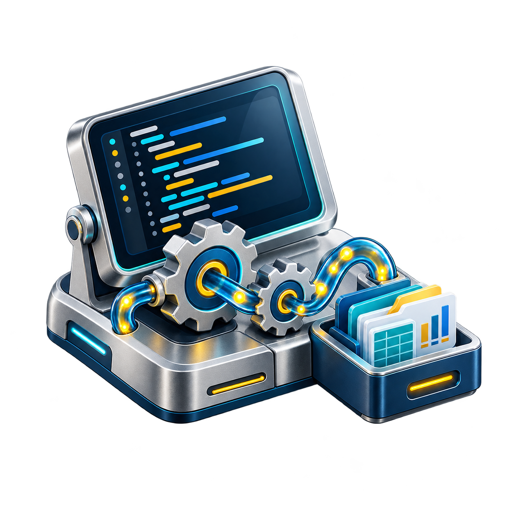
ファイル整理、データ集計、Webのサーバー、PC用の道具など、幅広い処理に。
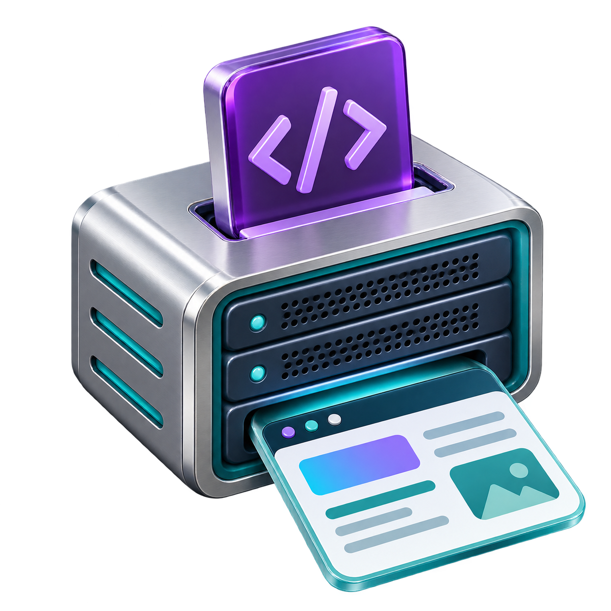
Webサーバーで動き、HTMLやAPIの応答を作る言語。ブラウザーにPHPのコードを実行させるわけではありません。
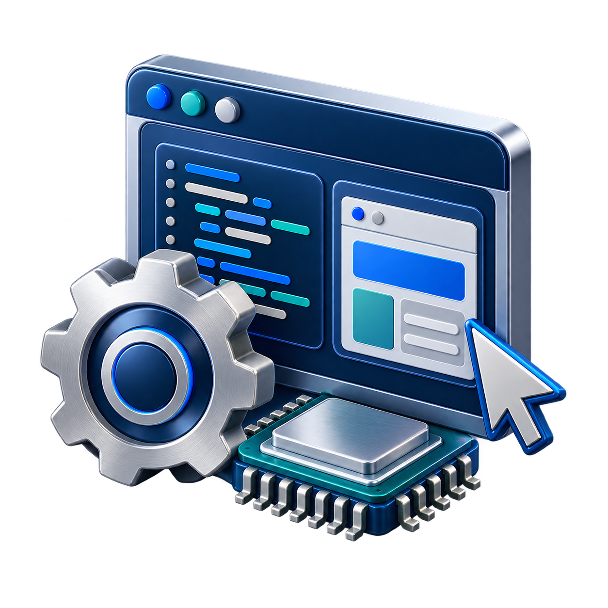
主に.NETと組み合わせる言語。Windows向けの画面作りにはWPFやWindows Formsがあります。
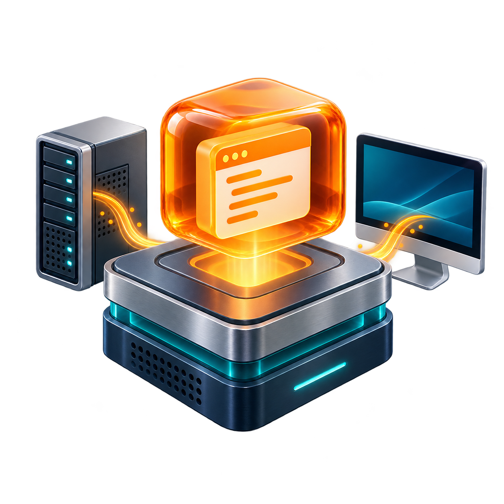
JVMで動かす言語。サーバーやPCアプリなどに。名前は似ていますが、JavaScriptとは別の言語です。
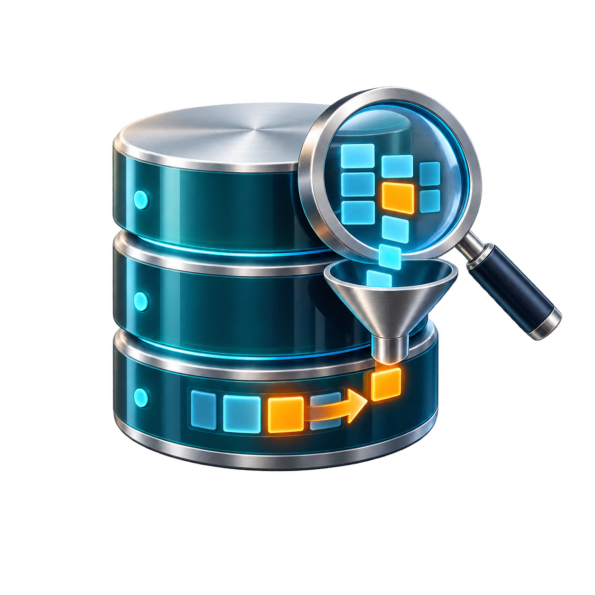
「必要な行を探して」「この値を更新して」とデータベースに伝える言語。アプリの言語と組み合わせます。
HTMLとCSSは？ HTMLは見出し・段落などの内容と構造を表すマークアップ言語。CSSは色・余白・配置などを指定するスタイルシート言語。JavaScriptと役割を分けて、Webの画面を作ります。
04 / THE JAVASCRIPT CONNECTION
「全部JavaScriptの派生形？」という感覚は、つながりを捉える入口になります。
ただし、すべてが新しい言語になったわけではありません。言語を拡張したもの、画面を作る道具、動かす場所が、一つの地図に集まっています。
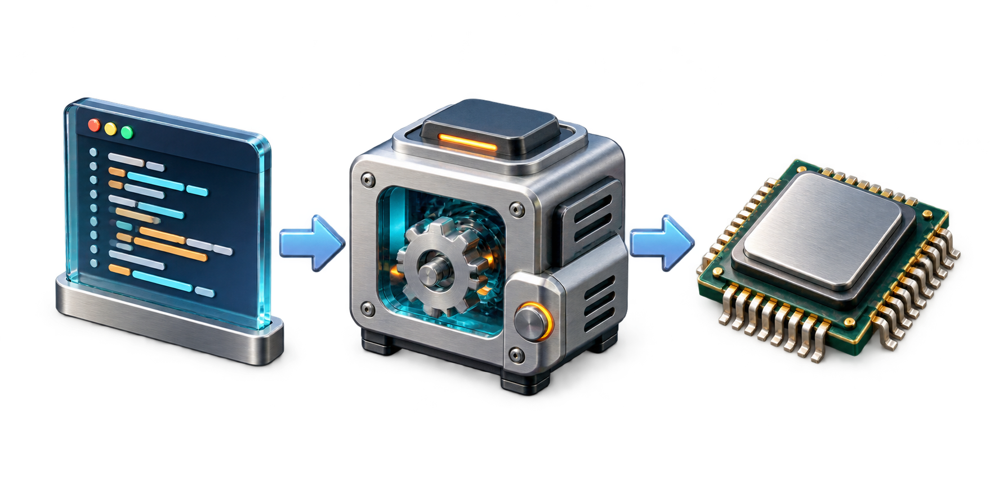
用途と役割の関係図です。TypeScriptはReact・Next.js・Expressなどと横断して組み合わせられます。すべてを使う必要はありません。
JavaScriptに「型」のチェックを追加。数字のはずの場所に文字を入れる、といった取り違えを見つける助けになります。通常はJavaScriptに変換して動かします。
ブラウザーの外でJavaScriptを動かす場所。サーバーの処理や、開発用の道具を動かすときに使います。
ボタン・一覧などの画面を、部品（コンポーネント）に分けて作る道具。JavaScriptやTypeScriptで書けます。
画面の要素を探す・書き換える・クリックに反応する、といった処理を短く書くための道具。JavaScriptの代わりとなる別言語ではありません。
Reactを使ってアプリを組み立てる枠組み。ページの切り替えや、サーバーで行う処理なども扱います。
Node.jsでWebサーバーやAPIを作る枠組み。どのURLへのリクエストに何を返すか、といった処理を整理します。
GoogleのサーバーでJavaScriptを動かし、スプレッドシートやGmailなどを操作する仕組み。Node.jsとは使える機能が異なります。
HTML・CSS・JavaScriptの画面をPCアプリにする枠組み。ブラウザーの技術とNode.jsを組み込みます。
ReactとjQueryは、同じ分類でも得意な作り方が違います。 Reactは部品とデータから画面を組み立て、jQueryは画面の要素を選んで操作する処理を助けます。ReactにjQueryを足さないと動かない、という関係ではありません。
シートの値を読んで、カレンダーに予定を登録する。Google側でコードを動かしてサービスをつなぎます。扱うデータに応じて承認が必要です。
GASの教材へ →// GASでシートのA1を読む例
const sheet = SpreadsheetApp
.getActiveSpreadsheet()
.getActiveSheet();
const value = sheet
.getRange('A1').getValue();05 / BUILD A WEB APP
使う人が操作する画面をフロントエンド。サーバー側で要求を受けて処理する部分をバックエンドと呼びます。
保存が必要ならデータベースなどを組み合わせます。APIは、画面とサーバーなどが情報をやり取りするための窓口です。
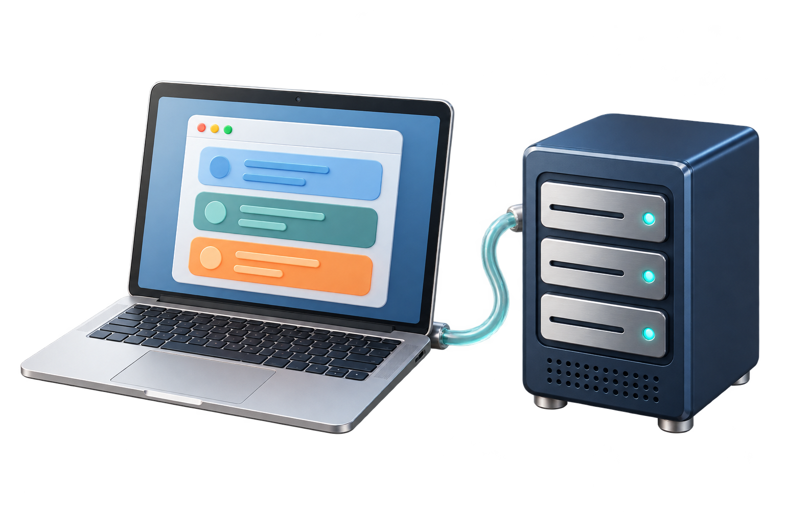
HTML / CSS / JavaScript
React・TypeScriptなど
Node.js ＋ Express
またはPHPなど
PostgreSQL / MySQLなど
SQLで読み書き
HTML ＋ CSS ＋ JavaScript → 静的ホスティング
計算ツールなど、専用バックエンドが不要なもの。ReactやTypeScriptを使う場合は、通常ビルドして公開用ファイルを作ります。
React ＋ TypeScript ↔ Node.js ＋ Express ↔ データベース
画面からAPIを呼び、サーバーがデータを読み書きする構成。バックエンドはPHP・Python・Javaなどでも作れます。
Next.js（React ＋ JS / TS）↔ データベース
画面とサーバーの処理を一つのプロジェクトで扱う構成。Node.jsなどで動かす方法のほか、機能の制約はありますが静的出力もできます。
Next.jsとExpressを、必ず両方使うわけではありません。 Next.jsがサーバー処理も担当する構成では、Expressを別に用意しない場合もあります。データベースのパスワードなどの秘密情報は、ブラウザー向けコードに入れません。
06 / ASK YOUR DATA
「80点以上の人の名前を、点数順に取り出して」。SQLは、欲しいデータをデータベースに伝えます。
SQLは言語。PostgreSQLやMySQLはデータベースのソフトウェア。 製品によって使える書き方には違いがあります。
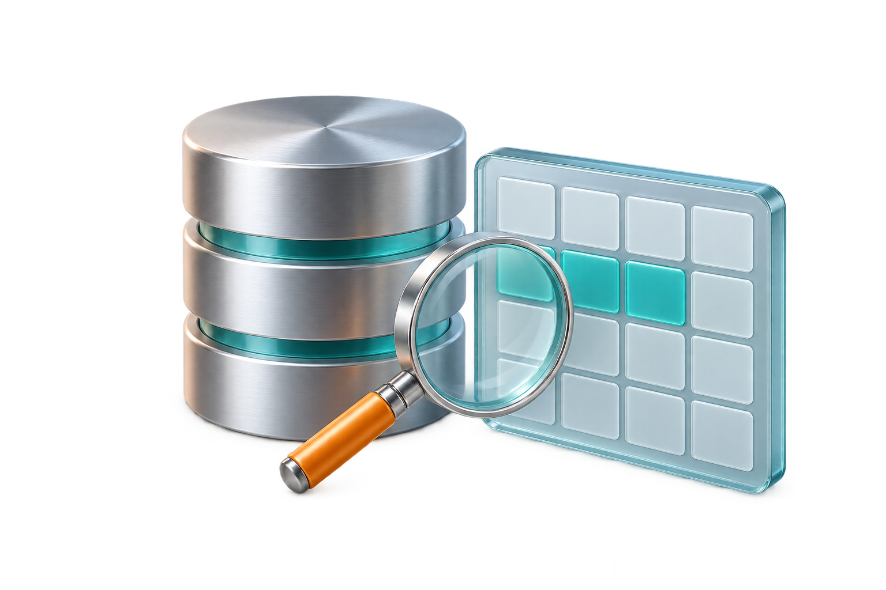
| name | score |
|---|---|
| あおい | 85 |
| はる | 72 |
| りん | 94 |
SELECT name
FROM students
WHERE score >= 80
ORDER BY score DESC;結果 りん → あおい
SELECT：何を取り出す？
FROM：どの表から？
WHERE：どんな条件？
ORDER BY：どんな順番？
アプリのPHP・Python・JavaScriptなどから、接続用のライブラリを通じてSQLを送ることがあります。この例は表示のみで、実際のデータは操作しません。
07 / BUILD A DESKTOP APP
デスクトップアプリは、端末上にアプリとして用意して使います。
言語 ＋ 画面を作る仕組み ＋ 実行環境 ＋ 配布の道具。コードを書いた後、利用者にどう届けるかまで考えましょう。
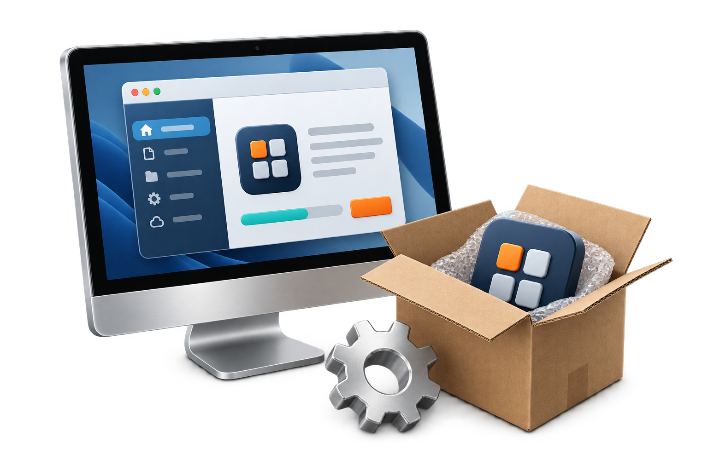
Windows・macOS・Linuxに対応。対応OSごとのビルドと動作確認が必要です。
PyInstallerは画面を作る道具ではなく、配布用にまとめる道具。 通常は配布先のOSでビルドします。利用者にPythonの別途導入を求めず配布できます。
この二つの画面技術はWindows向け。C#や.NET全体がWindows専用という意味ではありません。
対象OSに合わせてパッケージを作ります。JavaとJavaScriptは別の言語です。
デスクトップでも、サーバーと連携できます。 端末のファイルだけを使う設計も、APIやデータベースとつながる設計もあります。オフラインで動くかどうかは、作りたい機能と保存先から決めます。
08 / START WITH YOUR IDEA
「何の言語が一番？」より、「誰が・どこで・何をする？」から。すでにある作品を直すなら、使われている言語や道具を調べるところから始めます。
成績を集計？ 画像を整理？
予約を受け付ける？
ブラウザー？ Windows？
Googleスプレッドシート？
手元のファイル？
複数人で共有するデータ？
成績を入力して集計する小さなアプリを作りたいです。利用者は教員で、WindowsのPCを使います。Webアプリとデスクトップアプリの構成を比較してください。言語・画面を作る道具・実行環境・保存先・配布方法を分けて、中学生にも分かる言葉で説明してください。必要以上に道具を増やさず、まず作る最小構成を提案してください。
名前を全部暗記しなくても大丈夫。
「これは言葉？ 道具？ 動く場所？」
そう考えるだけで、技術の地図が少しずつ見えてきます。